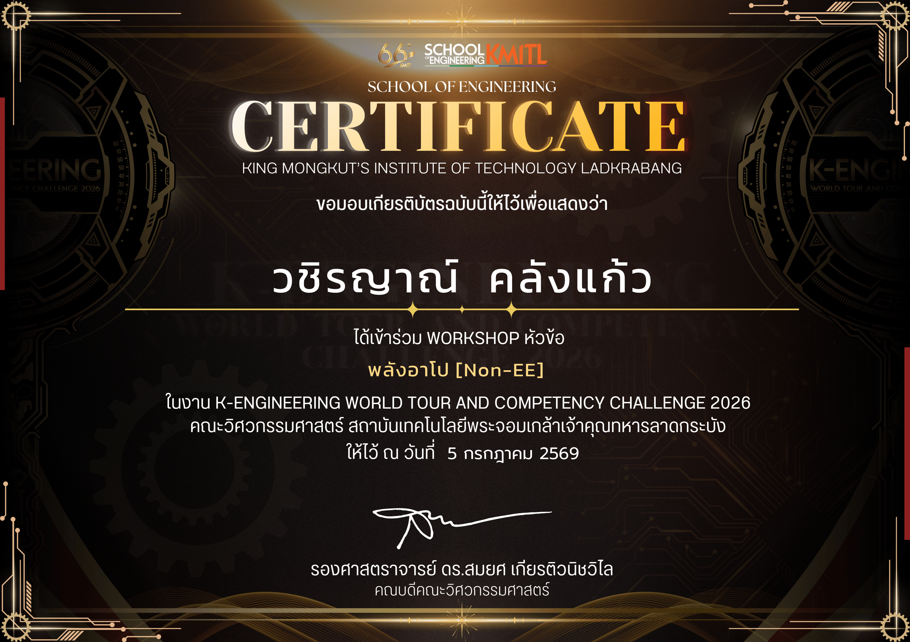
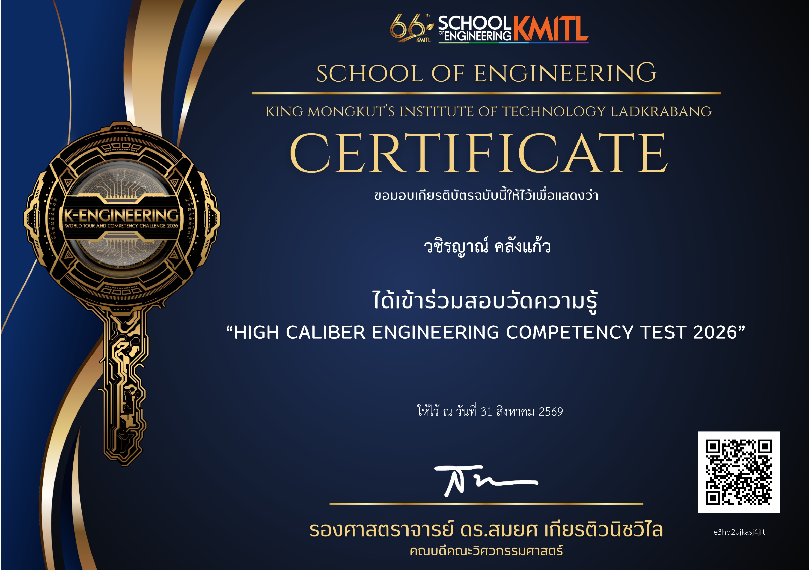
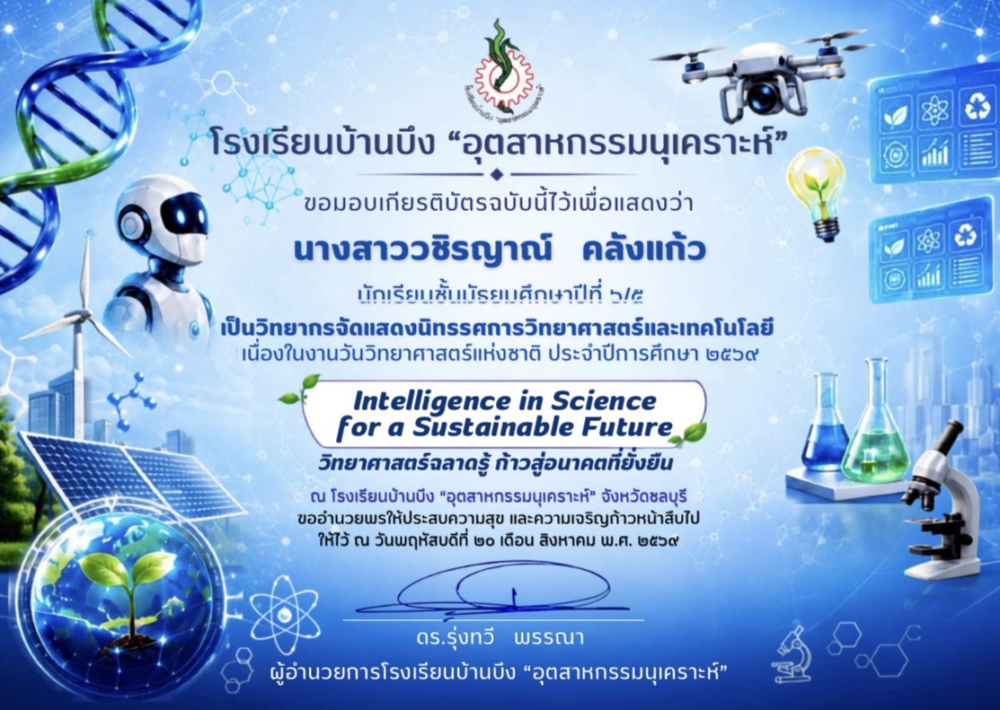

01🏗️ เวิร์กช็อปวิศวกรรมโยธา สจล.
เข้าร่วมกิจกรรมเวิร์กช็อปด้านวิศวกรรมโยธา ได้เรียนรู้แนวคิดพื้นฐานเกี่ยวกับงานวิศวกรรม และได้รับประสบการณ์จากกิจกรรมจริง
✦ MY WORKS & ACTIVITIES ✦

01เข้าร่วมกิจกรรมเวิร์กช็อปด้านวิศวกรรมโยธา ได้เรียนรู้แนวคิดพื้นฐานเกี่ยวกับงานวิศวกรรม และได้รับประสบการณ์จากกิจกรรมจริง

02เข้าร่วมการสอบวัดระดับความรู้ เพื่อทดสอบความรู้และพัฒนาตนเอง รวมถึงฝึกการเตรียมตัวก่อนการสอบ

03มีส่วนร่วมเป็นวิทยากรในกิจกรรมวันวิทยาศาสตร์ ได้ฝึกทักษะการสื่อสาร การนำเสนอ และการทำงานร่วมกับผู้อื่น
 04
04
เข้าร่วมค่ายคอมพิวเตอร์ Mecanum IoT ได้เรียนรู้เทคโนโลยี ระบบควบคุม และการทำงานของอุปกรณ์
 05
05
ทำหน้าที่สตาฟในกิจกรรมสัปดาห์คณิตศาสตร์ ฝึกการทำงานเป็นทีม การวางแผน และการทำงานร่วมกับคนหมู่มาก
เข้าร่วมการแข่งขันเล่านิทานคุณธรรม ระดับมัธยมศึกษาตอนปลาย ระดับเขตพื้นที่การศึกษาชลบุรีระยอง และได้รับ รางวัลเหรียญทอง